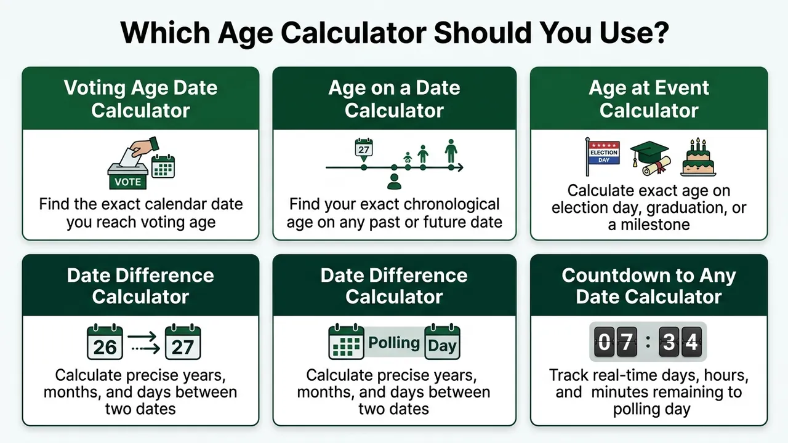

Quick answer
You reach voting age on the date you complete the required years from your birth date — usually your 18th birthday. Add 18 calendar years to your birth date to find it. But turning 18 alone does not let you vote: you must be on the electoral roll by the registration deadline, which can close weeks before election day.
What voting age means
Voting age is the minimum age at which a citizen may vote in an election. In most democracies it is 18, set by a constitution or election law. A few jurisdictions set it at 16 for some elections.
Reaching the age is a chronological fact: it happens on the anniversary of your birth. Voting itself is a separate, administrative act. You must be enrolled on the electoral roll, and enrollment has its own deadline and its own rules.
That split is the whole point of this guide. The date arithmetic is easy. The registration step is where first-time voters most often get caught out.
The rule most people miss: registration deadlines decide eligibility, not just your 18th birthday. If the roll closes before you register, you cannot vote in that election even if you are 18 on polling day.
How the date is calculated
Voting-age arithmetic follows the calendar, not elapsed days. Add the required number of whole years to the birth date, keeping the month and day the same.
Date of birth + required voting age = voting-age date. Born 12 June 2008, you turn 18 on 12 June 2026. Born 18 November 2008, you turn 18 on 18 November 2026.
Do not count 365-day blocks. A fixed block of 365 days drifts by a day at every leap year, so it would move your birthday. Calendar years step across whole annual boundaries, and the month and day stay fixed.
Three details matter. First, the day and month never change: a person born on 14 October keeps 14 October as the milestone date in every year. Second, the age test is applied on election day, not on the day you register — so you can usually register in advance while still 17.
Third, the modern common-law position is that you reach an age on the anniversary day itself, not the day before.
Leap-day births are the one case where the calendar cannot keep the date: 29 February does not exist in a common year. Jurisdictions differ — some use 28 February, others 1 March. The Voting Age Date Calculator on this site applies 28 February clamping.
Worked example
Take a birth date of 18 November 2008 and a voting age of 18.
Birth date 18 November 2008, voting age 18
Step 1 — Add 18 calendar years. 18 November 2008 + 18 years = 18 November 2026.
Step 2 — Check the weekday. 18 November 2026 is a Wednesday.
Step 3 — Test the election. An election on 1 December 2026 falls 13 days after the 18th birthday, so the voter is 18 on polling day and meets the age test.
Step 4 — Check the deadline. If registration closes on 3 November 2026, the voter is still 17 on that date. They must register in advance; in a jurisdiction that allows it, the registration activates on 18 November.
Result: voting-age date Wednesday, 18 November 2026.
Now the leap-day case. A birth date of 29 February 2008 plus 18 years lands in 2026, a common year with no 29 February. With the 28 February clamping this site’s calculator applies, the voting-age date is Saturday, 28 February 2026.
Under a jurisdiction that observes 1 March instead, it is Sunday, 1 March 2026. Check the local rule before booking anything around the date.
A 16-year threshold works the same way. The same person born 18 November 2008 reaches 16 on 18 November 2024 — the date that matters for voting in Scottish Parliament and local elections, and for European Parliament elections in Germany.
Voting-age dates by birth year
Read across for the birth date, the exact 18th birthday, and its weekday. Every date below was computed by adding 18 calendar years to the birth date.
| Birth date | Turns 18 | Weekday |
|---|---|---|
| 1 January 2006 | 1 January 2024 | Monday |
| 15 July 2006 | 15 July 2024 | Monday |
| 1 January 2007 | 1 January 2025 | Wednesday |
| 20 August 2007 | 20 August 2025 | Wednesday |
| 1 January 2008 | 1 January 2026 | Thursday |
| 12 June 2008 | 12 June 2026 | Friday |
| 18 November 2008 | 18 November 2026 | Wednesday |
| 31 December 2008 | 31 December 2026 | Thursday |
| 1 January 2009 | 1 January 2027 | Friday |
| 10 September 2009 | 10 September 2027 | Friday |
| 1 January 2010 | 1 January 2028 | Saturday |
For any other birth date, add 18 to the birth year and keep the month and day. The Voting Age Date Calculator does the same arithmetic for any threshold from 1 to 100.
Voting age around the world
Age 18 is the standard in most democracies, including the United States, the United Kingdom, India, Canada, Australia and New Zealand. The exceptions cluster at 16, and they usually apply to some elections only.
| Country or region | Voting age | Notes |
|---|---|---|
| United States | 18 | 26th Amendment (1971). Some states let 17-year-olds vote in primaries if they turn 18 by the general election. |
| United Kingdom | 18 / 16 | 18 for UK Parliament elections. 16 for Scottish Parliament and local elections (2015) and Senedd and local elections in Wales (2020). |
| India | 18 | Article 326 of the Constitution; lowered from 21 to 18 by the 61st Amendment (1989). Four annual qualifying dates. |
| Canada | 18 | Federal elections under the Canada Elections Act. Must be 18 on or before polling day. |
| Australia | 18 | Commonwealth Electoral Act 1918. Voting is compulsory for citizens aged 18 and older. |
| New Zealand | 18 | Electoral Act 1993. Enrolment is compulsory from 18; advance enrolment is allowed at 17. |
| Austria | 16 | Lowered to 16 in 2007 for federal, parliamentary and European Parliament elections. |
| Germany | 16 / 18 | 16 for European Parliament and several state elections; 18 for the Bundestag. |
| Brazil and Argentina | 16 (voluntary) | Voting is voluntary at 16 and 17 and becomes mandatory at 18. |
Election law changes. Before any election, confirm the current age and registration rules with your national electoral authority or local election office.
Voting age in India
In India the voting age is 18 under Article 326 of the Constitution and the Representation of the People Act, 1950. It was lowered from 21 by the 61st Constitutional Amendment Act, 1988, effective 28 March 1989.
The qualifying condition is that a citizen must be not less than 18 years old on the qualifying date of the electoral revision. Since a 2022 amendment by the Election Commission of India, there are four qualifying dates each year: 1 January, 1 April, 1 July and 1 October.
Before that change there was only one, 1 January, so a person turning 18 on 2 January waited a full year to enrol.
Young citizens who turn 17 can submit an advance application (Form 6) through the Voter Helpline app or the official voters portal. The application is queued and the name is added to the roll at the next quarterly revision in which the applicant is 18.
Reaching 18 does not by itself let you vote. The steps are: turn 18, file Form 6 with proof of age and residence, pass field verification by the Booth Level Officer, appear on the final electoral roll, and receive an Elector’s Photo Identity Card (EPIC).
On polling day, what matters is having your name on the current roll for your booth. A birth certificate alone does not get you a ballot.
Voting age in the United States
The 26th Amendment to the US Constitution, ratified in July 1971, provides that the right of US citizens aged 18 or older to vote shall not be denied or abridged on account of age. That sets the age threshold for federal elections.
Registration is run by the individual states, and the procedures differ widely. More than 20 states, including California, Florida, Maryland, New York and North Carolina, allow preregistration at 16 or 17; the state holds the record and activates it on the 18th birthday.
Deadlines range from about 30 days before election day to same-day registration at the polling place, which more than 20 states now offer.
About 18 states, including Illinois, Ohio, Virginia and Maryland, let 17-year-olds vote in congressional or presidential primaries if they will turn 18 on or before the general election date. Check your Secretary of State’s elections division or vote.gov well before election season — the deadline, not the birthday, is usually the binding date.
Special cases
Leap-day birthdays. Born 29 February 2008, you turn 18 in 2026, a common year. Some jurisdictions treat 28 February as the anniversary; others use 1 March. Both are used in practice, so confirm the local rule.
Birthday on polling day. If your 18th birthday falls exactly on election day, you meet the age test in virtually all major democracies. You still need to have registered by the deadline, or live in a jurisdiction with same-day registration.
Turning 18 after the deadline. If registration closes on 10 October and you turn 18 on 25 October, with polling on 3 November, you can register before 10 October in any jurisdiction that supports advance registration. The checklist looks at your age on polling day, not on the filing date.
Different ages in the same city. In federal and devolved countries, different elections can have different thresholds. A 16-year-old in Edinburgh can vote in Scottish Parliament and local council elections but must wait until 18 to vote for a Member of Parliament in a Westminster general election.
In Germany, a 16-year-old can vote in European Parliament elections but must be 18 for the Bundestag.
How old will you be on election day?
The voting-age calculator starts from your birth date and tells you when you reach the threshold. The inverse question — “an election is on 3 November 2026; how old will I be?” — needs a different tool.
Use the Age on a Date Calculator for your exact age in years, months and days on a known election date. Use the Age at Event Calculator to compare your age against several civic dates at once, such as the date rolls open or absentee ballots are mailed.
Which calculator to use
Pick the tool whose inputs match your question. Each one answers a different version of the same planning problem.
| What you want to know | Best tool |
|---|---|
| What exact date do I turn 18 or reach voting age? | Voting Age Date Calculator |
| How old will I be on election day? | Age on a Date Calculator |
| How old was I at a past election or civic event? | Age at Event Calculator |
| How many days remain until election day? | Countdown to Date Calculator |
| How many days are between my birthday and the registration deadline? | Days Between Dates Calculator |
| What is the span in years, months and days between two civic dates? | Date Difference Calculator |

Common mistakes
- Waiting until your 18th birthday to register. If registration closed two weeks earlier, you miss the election even though you are of age on polling day. Start months ahead.
- Assuming the age test happens on registration day. In most systems the test is on election day. If you will be 18 then, you can generally register in advance.
- Assuming registration is automatic. In the US, the UK and India, turning 18 does not put you on the roll. You must apply. Some European countries do enrol citizens automatically from municipal registers.
- Overlooking residency and address rules. Rolls are organised by residential precinct. A move for university or work means updating your registered address before the change-of-address cutoff.
- Forgetting voter ID. Reaching voting age lets you vote; casting a ballot often still needs accepted photo ID, such as a Voter Authority Certificate in the UK, a state ID in the US, or an EPIC in India.
Frequently asked questions
What is the standard voting age in most democracies?
The standard voting age is 18 years in the majority of modern democracies, including the United States, the United Kingdom, India, Canada, Australia, and New Zealand. Several jurisdictions, including Austria, Scotland (for Scottish parliamentary and local elections), Wales, Germany (for European Parliament elections), and Brazil, allow voting at age 16 for specific elections.
How do I calculate the exact calendar date I reach voting age?
Your voting-age date is calculated by adding the required statutory number of calendar years (typically 18 years) to your exact date of birth. For example, if you were born on June 12, 2008, adding 18 calendar years yields June 12, 2026. Leap-day births (February 29) turn 18 on 28 February or 1 March in a non-leap year, depending on the jurisdiction — both dates are used. The Voting Age Date Calculator on this site applies 28 February clamping, so a 29 February 2008 birth is shown reaching 18 on Saturday, 28 February 2026.
Can I register to vote before turning 18?
Yes, many democratic systems explicitly permit advance registration or preregistration at age 16 or 17. For instance, in the United States, over 20 states and Washington D.C. allow preregistration at 16 or 17. In India, under the Election Commission of India’s four quarterly qualifying dates system, youth who turn 17 can submit Form 6 in advance.
Can I vote if my 18th birthday falls on election day itself?
Yes, in virtually all major democracies, the statutory requirement tests your age on polling day. If you reach the required voting age on election day, you satisfy the age criterion. However, you must have completed voter registration by your jurisdiction’s required deadline, or utilize same-day registration where permitted.
Can I vote if I turn 18 after the registration deadline but before election day?
In jurisdictions with advance voter registration, yes. You register prior to the deadline as a future voter, and your active status takes effect on your 18th birthday before or on polling day. However, in jurisdictions without advance registration or same-day registration, missing the voter cutoff deadline may prevent you from casting a ballot.
How does a leap year (February 29) affect my 18th birthday calculation?
If you were born on February 29 of a leap year (such as 2008), 18 years later falls in a common year (such as 2026), which has only 28 days in February. It depends on the jurisdiction: some treat 28 February as the anniversary in a non-leap year and others use 1 March. The Voting Age Date Calculator on this site applies 28 February clamping, so a 29 February 2008 birth is shown reaching 18 on Saturday, 28 February 2026.
Takeaways
Planning your first vote is two steps: a date, and an administrative act.
- Find your milestone date: add the required years to your birth date, keeping month and day fixed.
- Find the election dates that fall on or after your 18th birthday.
- Find the registration deadline for that election — it may be weeks before polling day.
- Preregister at 16 or 17 where your jurisdiction allows it, so your status activates on your birthday.
- Confirm your polling place and ID requirements before election day.